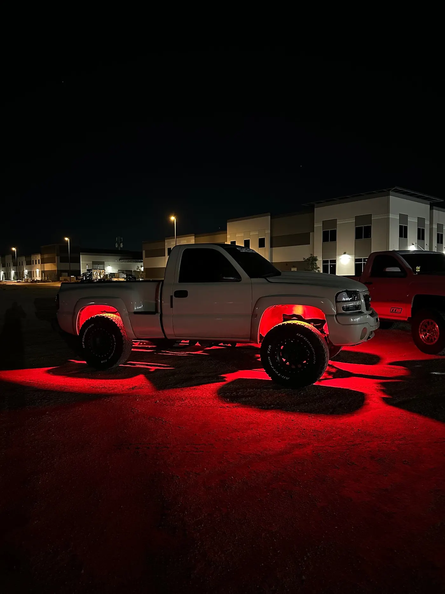
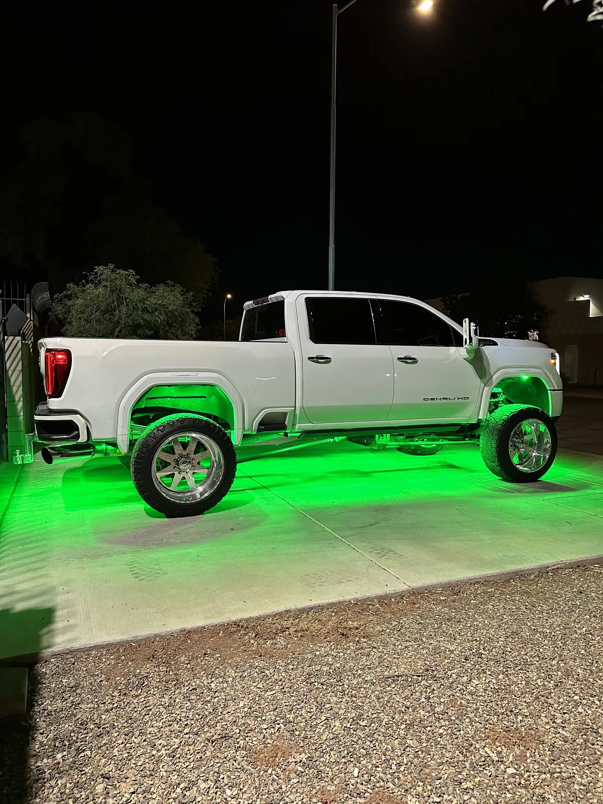
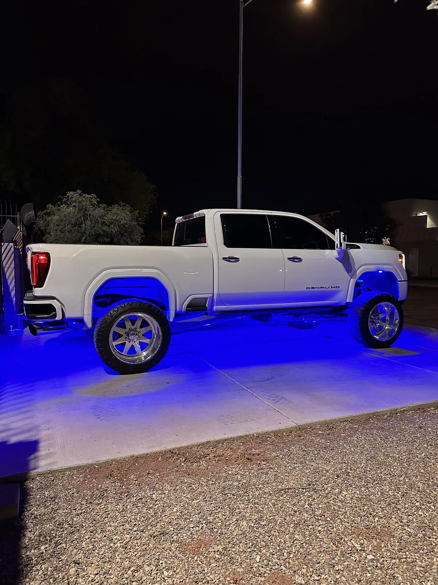
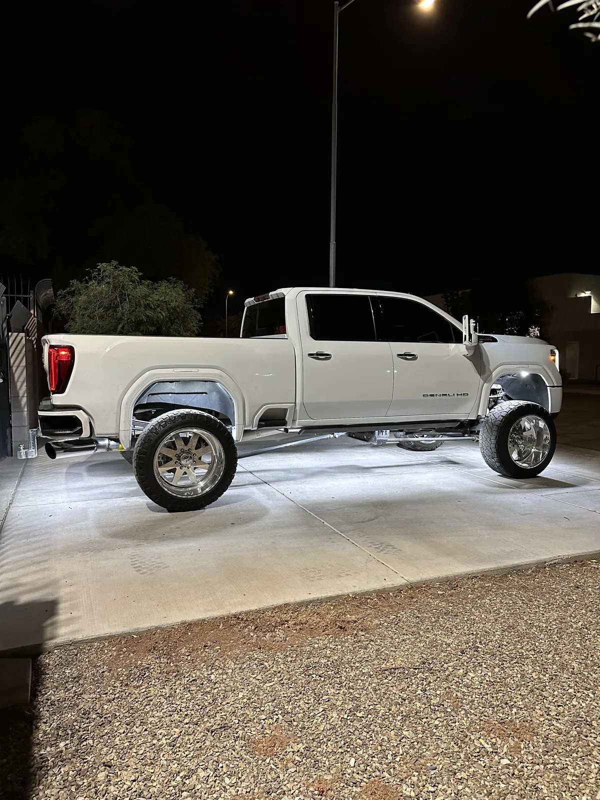

Plug And Play
RGBW Rock Light Kit
- 44 LED Chip
- RGBW
- Bluetooth App
$205 to $705 4 to 20 lights
Underglow · Mesa, AZ
We build underglow from sealed rock light pods instead of light strips, in white or any color from your phone. Below is how it works, what it costs, and what Arizona allows on the road.
5.0★ from 33 reviews · installed in Mesa · kits ship anywhere

Arizona's lighting rules for this live in A.R.S. 28-947. Three parts of it matter for rock lights, underglow and accent lighting on a road.
In practice that means solid white is the everyday setting, and colors and flashing modes are for when you're parked. Read the statute yourself at azleg.gov. This is a plain-English summary, not legal advice.
Underglow comes in two forms. LED strips run along the frame rails and glow as a continuous line. Pods are individual sealed lights, the same rock lights off-roaders use, mounted at points under the vehicle and aimed at the ground.
We build underglow from pods. Each one is sealed on its own, so one damaged light doesn't take out a whole side, and each can be aimed where it's needed. Spread enough of them out and the ground lights up as one even pool, with no line of strip showing.
| Rock light pods | LED strips | |
|---|---|---|
| How it mounts | Individual lights on the frame and in the wheel wells | Long strips along the frame rails |
| If one fails | One light out | Often a whole strip |
| Aiming | Each light pointed where you want it | Fixed along the rail |
| What we sell | RGBW and pure white kits | None |
The RGBW kit is what most underglow customers want. It's a 44-chip light that does red, green, blue and a true white, picked from the Bluetooth app or the remote. It's full plug and play with the module, and it's waterproof.
That white channel is the point for Arizona. The same truck can run white on the drive and switch to color once it's parked. Kits come in 4, 8, 12, 16 and 20 lights.



$205 to $705 4 to 20 lights
If you want something you can run every night without thinking about it, go white. Our 72, 84 and 219-chip pure white rock lights make a bright white underglow that's fine on the road. See them on our rock lights page.
Underglow needs more lights than wheel-well lighting, because the goal is an even glow down the whole side. On a car or a short truck, 12 lights covers the wheel wells and the sides. On a crew cab, plan on 16 to 20. Our truck layouts show exactly where each light goes at each count.
Lower vehicles are where underglow looks best, because the light has less distance to the ground and pools tighter. They're also where clearance gets tight. We check clearance at drop-off before anything gets mounted.
Every light we put on a vehicle gets the same four things. None of them are extras, and none of them depend on who's working that day.
Underglow isn't banned by name, but A.R.S. 28-947 says no red or blue light can be visible from the front of a vehicle on a highway, lights visible from the front must be amber or white, and flashing lights are only allowed in a few cases. White underglow is the safe choice for driving, and colors are for when you're parked.
Not with red or blue showing from the front. Our RGBW kit has a true white channel, so you can drive in white and switch to color when you're parked.
Our RGBW kit runs $205 for 4 lights up to $705 for 20. Install labor depends on the vehicle and is quoted before we start.
We build underglow from rock light pods. If you already have a strip kit, book a Wiring Fix or an install and tell us what it is.
Usually, and it looks best there. We check clearance at drop-off before anything gets mounted.
Yes. The RGBW kit runs from a Bluetooth app or the included remote.
Installs In Mesa
Bring our kit or your own lights. We text you to confirm your drop-off and quote.